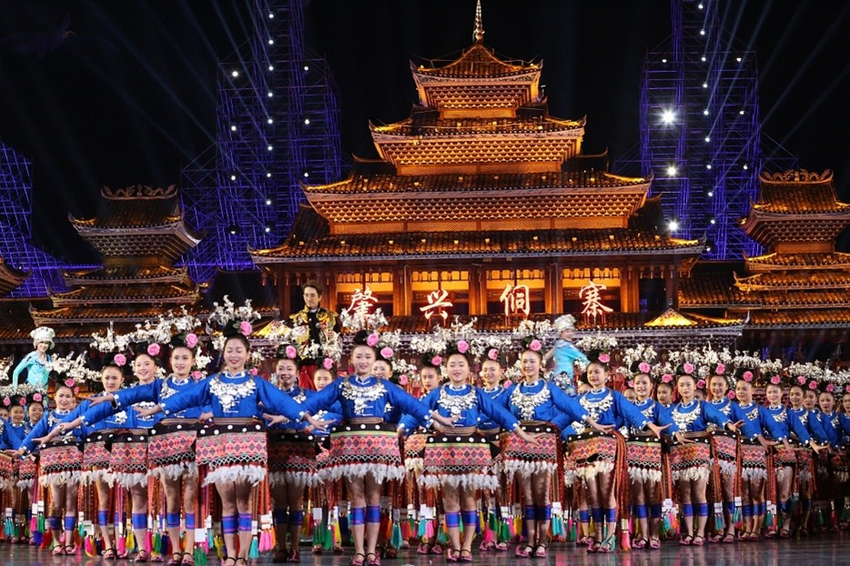
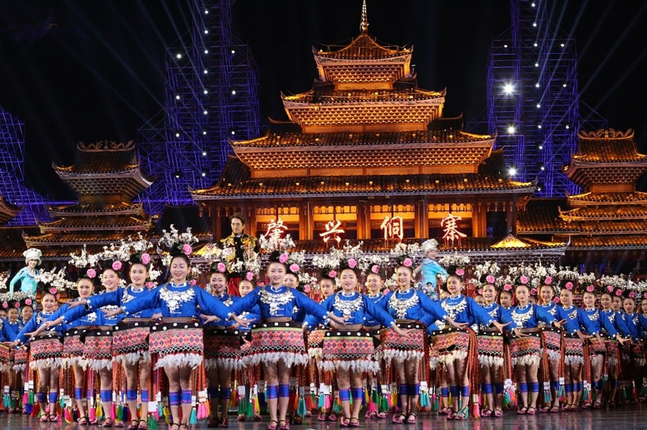
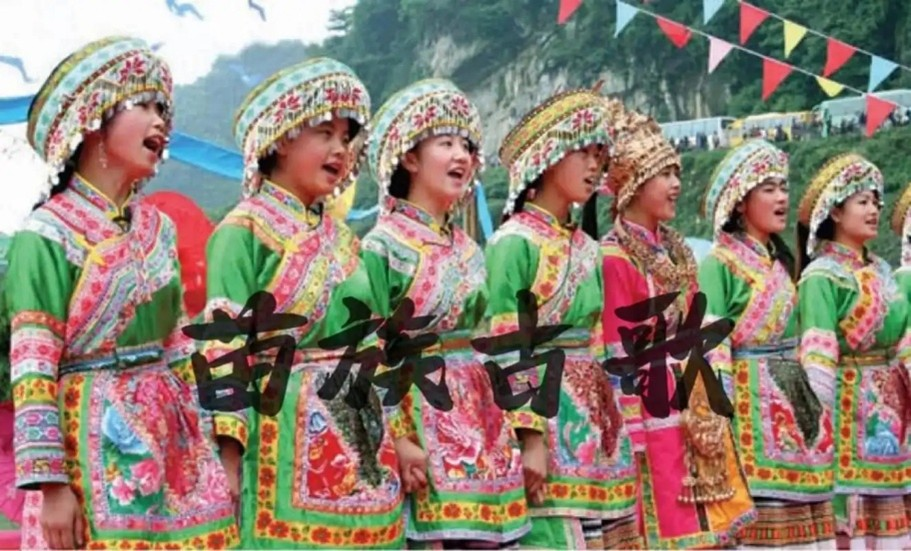
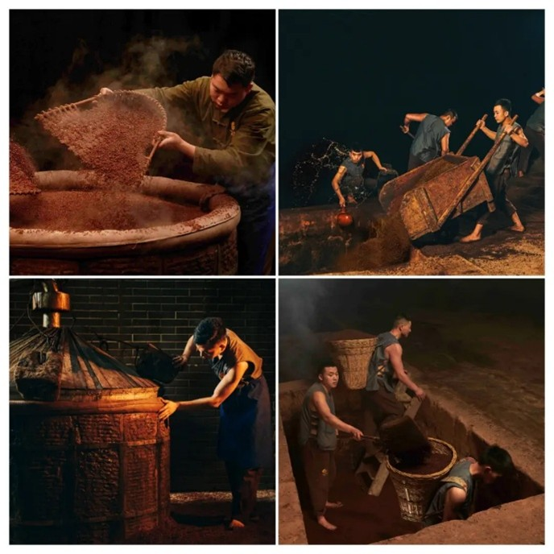
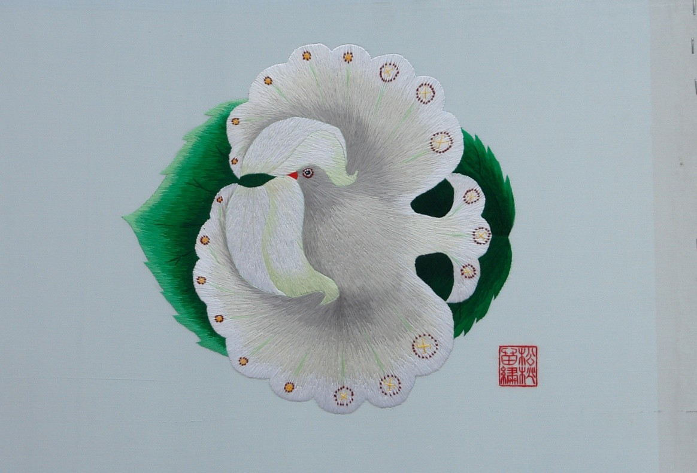
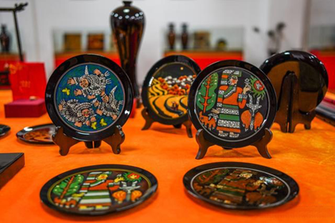

侗族大歌
侗族大歌，流行于贵州省黔东南地区的黎平县、从江县、榕江县等侗族聚居区和广西壮族自治区三江侗族自治县的传统音乐，中国国家级非物质文化遗产之一，人类非物质文化遗产之一。侗族大歌源于春秋战国时期，至宋代，侗族大歌已经发展到了比较成熟的阶段，至明代，侗族大歌已经在侗族部分地区盛行了。侗族大歌的发展与其鼓楼的居住形式，好客的风俗习惯，以及侗族语言有着分不开的联系。侗族大歌结构严密而精美，歌词押韵，曲调优美，歌词多采用比兴手法，意蕴深刻。
侗族大歌，流行于贵州省黔东南地区的黎平县、从江县、榕江县等侗族聚居区和广西壮族自治区三江侗族自治县的传统音乐，中国国家级非物质文化遗产之一，人类非物质文化遗产之一。侗族大歌源于春秋战国时期，至宋代，侗族大歌已经发展到了比较成熟的阶段，至明代，侗族大歌已经在侗族部分地区盛行了。侗族大歌的发展与其鼓楼的居住形式，好客的风俗习惯，以及侗族语言有着分不开的联系。侗族大歌结构严密而精美，歌词押韵，曲调优美，歌词多采用比兴手法，意蕴深刻。
苗族古歌，贵州省台江县、黄平县地方传统民间文学，国家级非物质文化遗产之一。苗族古歌内容包罗万象，从宇宙的诞生、人类和物种的起源、开天辟地、初民时期的滔天洪水，到苗族的大迁徙、苗族的古代社会制度和日常生产生活等，无所不包，成为苗族古代神话的总汇。
茅台酒酿制技艺，贵州省遵义市茅台镇的地方传统技艺，国家级非物质文化遗产之一。茅台酒酿制技艺是一种独特的传统酿酒工艺。茅台酒的生产工艺分制曲、制酒、贮存、勾兑、检验、包装六个环节。整个生产周期为一年，端午踩曲，重阳投料，酿造期间九次蒸煮，八次发酵，七次取酒，经分型贮放，勾兑贮放，五年后包装出厂。茅台酒的酿制有两次投料、固态发酵、高温制曲、高温堆积、高温摘酒等特点，由此形成独特的酿造风格。
松桃苗绣指贵州省松桃县范围内生产的苗族刺绣，多以花鸟虫鱼、日月山川为题材，其构图夸张浪漫，图案介于具象与抽象之间，着色大胆自由，针法绣法多样，具有鲜明的风格。内容体现了苗族人民祖先崇拜、自然崇拜、图腾崇拜的思想。2015年7月，松桃苗绣注册国际级地理标志证明商标。
大方漆器，贵州省大方县特产，中国国家地理标志产品。 大方漆器已有600余年历史，其漆制品采用牛、羊等皮革和棉、麻、绸、木等做胎，用当地的优质生漆作原料，明洪武年间形成了一套以皮胎漆器为主的漆器制作工艺。大方漆器有较高的欣赏价值和实用价值，是贵州省优秀的民族民间艺术瑰宝。曾与贵州茅台酒、贵州玉屏箫笛合称为“贵州三宝”。2008年，“彝族漆器髹饰技艺”被列入国家级非物质文化遗产名录。 清《乾隆通志》记载：“黔之革器以大定（大方）为最佳”，大方皮胎漆器成为全国特色，并独创了“隐纹”装饰技法。大方漆器制作工艺独特，制作要求高，工艺流程繁杂，主要有制漆、胎胚、灰地、漆地、装饰五大工艺，50多道工序，82道生产环节，产品做工精细，品种齐全，造型生动，深受国内外消费者及收藏人士的青睐。 (唱词)、音乐(唱腔)和舞蹈(如“龙江浪三场”等)是最具有魅力、与众不同的精华部分。
